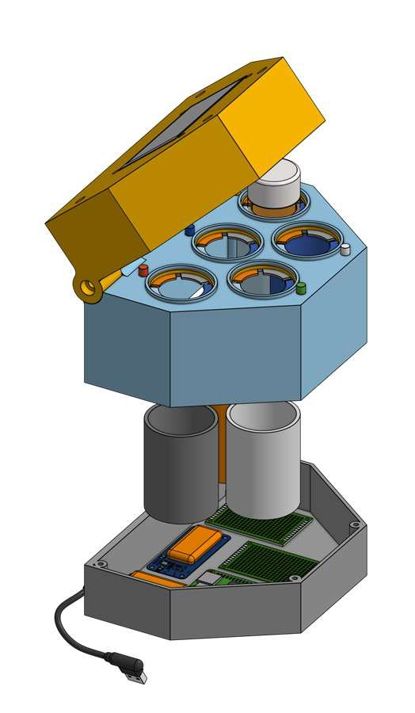
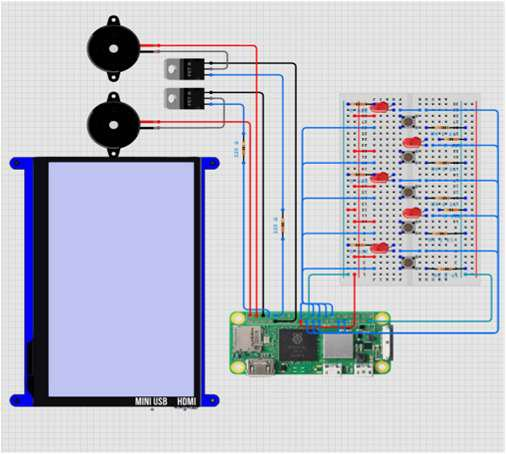

Medical device · Duke EGR 101 · Fall 2025
Low-Cost ADHD Medication Reminder System
A portable, 3D-printed pill station that reminds adults with ADHD to take their medication with lights, sound and an LCD — and logs every dose to a companion website.
- My role
- Electronics — soldered and assembled all electrical components (Raspberry Pi, LCD, LEDs, buttons, buzzers)
- Team
- L. Leininger, E. Samborski, A. Gupta, A. Misra, A. Kathapurkar
- Users
- Adult women with ADHD, with three project clients
- Stack
- Raspberry Pi · Flask · PLA / TPU printing · Li-ion power
The problem
ADHD makes routine tasks like taking medication on schedule hard, and both missed and doubled doses carry real costs — the latter including raised blood pressure and cardiovascular strain. Women are often diagnosed later in life and are juggling jobs and families, which makes a new medication routine even harder to keep.
What we built
A hexagonal housing holds up to five pill bottles, each retained by a flexible TPU cap and paired with a button and LED. Pressing the button logs the dose; the LCD shows what's been taken and when the next dose is due. A Raspberry Pi hosts a Flask web app for scheduling alarms and tracking refills remotely, and onboard batteries make it portable.




Verification testing — all criteria passed
| Criterion | Test | Target | Result |
|---|---|---|---|
| Reminder effectiveness | 22 users rated alerts at distances up to 15 m | ≥ 3 / 5 | 4.36 / 5 |
| Pill-logging reliability | Each of 5 buttons pressed 100×, LCD checked | ≥ 95% | 95–98% |
| Wireless range | Settings changed from phone at increasing distance | ≥ 10 m Wi-Fi, ≥ 5 m hotspot | 13 m / 8 m |
| Bottle retention | 2 bottle sizes inserted & removed 25× per slot | Cap intact | All 5 slots |
| App usability | 12 users rated ease of use | ≥ 4 / 5 | 4.25 / 5 |
Next: swap the buzzer for a speaker so users can customize sounds, and link multiple devices for households.